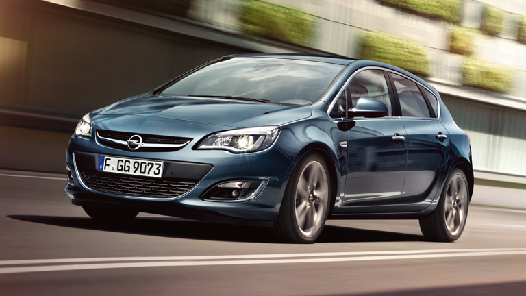

Opel Astra Hatchback
Краткое описание:
Новый динамичный дизайн Opel Astra делает его одним из самых стильных автомобилей в своем классе. «Astra» ассоциируется с надежностью, что доказано различными наградами международного уровня. Кроме того, автомобиль оснащен новейшими инновационными системами помощи водителю, такими как система адаптивного головного освещения (AFL) третьего поколения и камера заднего вида (RVC).
Подробное описание:
Аэродинамичный, стильный и элегантный. Обновленный дизайн нового Opel Astra хэтчбек дополняет и
подчеркивает привлекательность автомобиля. Более низкая и широкая хромированная решетка зрительно
увеличивает ширину автомобиля и формирует новый, более совершенный облик передней части
автомобиля.
Хотя
это полноценный 5-местный автомобиль вместительный и функциональный, пропорции его близки к пропорциям
купе.
Погрузитесь в атмосферу уютного салона, великолепная отделка которого может быть выполнена в нескольких
вариантах. Высококачественные материалы и эргономика интерьера обеспечивают максимальный комфорт и
простоту управления. Хромированные вставки придают кокпиту современный вид в стиле техно.
В новом
Opel Astra особое внимание уделялось таким деталям, как дизайн и практичное расположение элементов
управления и вещевых отделений. В результате получился изящный кокпит, ориентированный на водителя и
отличающийся превосходной эргономичностью.
Технические характеристики Opel Astra Hatchback:
Opel Astra Hatchback Technical Leaflets